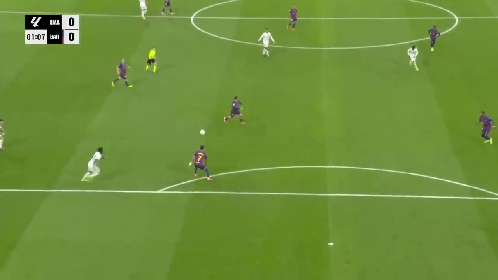
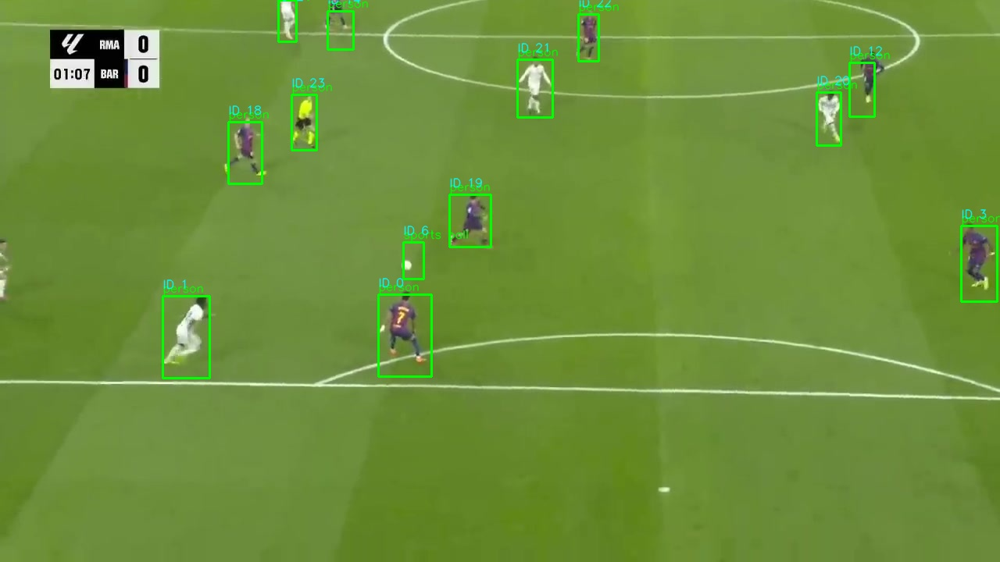
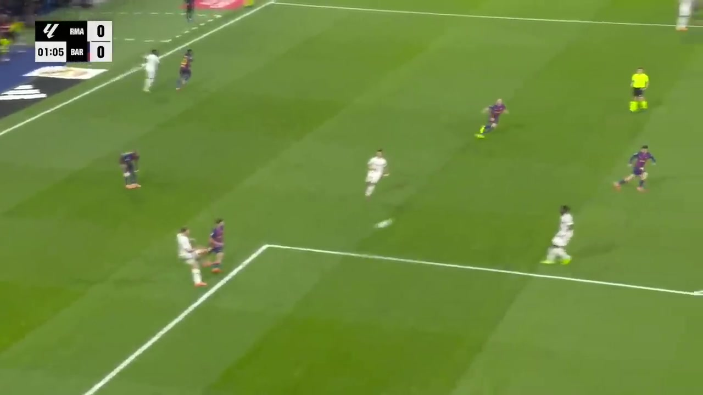
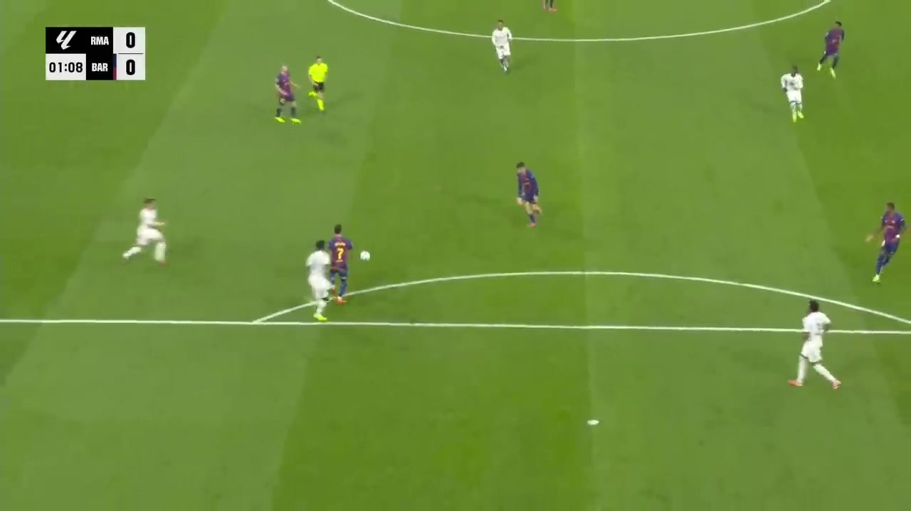
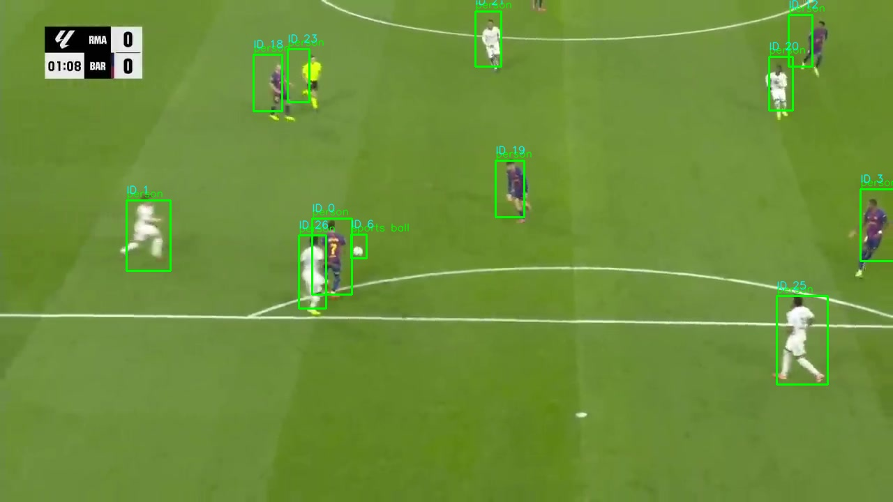
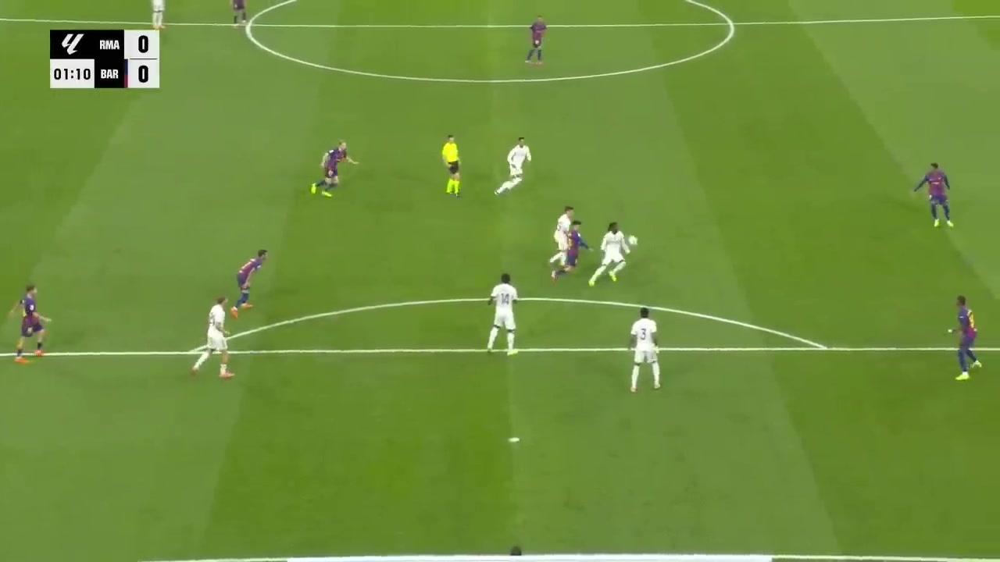

See it in action
Real La Liga broadcast footage (Barcelona vs Real Madrid) processed end-to-end through the pipeline. Raw frames on the left, detection + tracking overlays on the right — green bounding boxes with persistent track IDs and COCO class labels.








Run statistics
20 frames sampled at 2 FPS from a Barça vs Madrid highlight reel, processed with confidence=0.4, max_age=20, per-class IoU-NMS at 0.6, and a 35%-of-frame area clamp.
Pipeline architecture
┌─────────────────┐ ┌──────────────┐ ┌──────────────┐
│ Video Source │ │ Detection │ │ Tracking │
│ YouTube / RTSP │────▶│ YOLOv8n │────▶│ ByteTrack │
│ FIFA Gameplay │ │ (stock COCO)│ │ + Kalman │
└─────────────────┘ └──────────────┘ └──────┬───────┘
│
┌───────────────┐ ┌─────────▼────────┐
│ FastAPI │ │ Graph Builder │
│ REST + Live │◀────│ Spatial-Temporal│
└───────┬───────┘ └─────────┬────────┘
│ │
┌───────▼───────┐ ┌─────────▼────────┐
│ MLflow │ │ GraphSAGE GNN │
│ Tracking │ │ Tactical Analysis│
└───────────────┘ └──────────────────┘What the pipeline outputs
A full run writes structured JSON plus visual overlays, ready for downstream analytics or dashboarding. The summary below is from the run that produced the frames above.
pipeline_summary.json
{
"total_frames": 20,
"total_detections": 220,
"num_unique_tracks": 34,
"graph_nodes": 211,
"graph_edges": 422,
"config": {
"weights": "yolov8n.pt",
"confidence": 0.4,
"min_confidence": 0.4,
"distance_threshold": 120.0,
"max_age": 20,
"graph_window": 30
},
"tactical_analytics": {
"enabled": true,
"avg_home_control_pct": 57.88,
"avg_away_control_pct": 42.12,
"team_assignments": { "...": "..." }
}
}detections/frame_000005.json
{
"frame_id": 4,
"frame_name": "frame_000005.jpg",
"num_detections": 9,
"detections": [
{
"bbox": [729.8, 19.6, 1252.6, 710.7],
"confidence": 0.950,
"class_id": 0,
"class_name": "person"
},
{
"bbox": [406.8, 380.8, 754.3, 712.0],
"confidence": 0.564,
"class_id": 0,
"class_name": "person"
},
{ "...": "..." }
]
}Key features
Detection & tracking
Stock YOLOv8n (COCO) with soccer-tuned ByteTrack + Kalman filtering. Per-class NMS and area-ratio filtering suppress spurious bboxes without losing real players.
Graph neural networks
Spatial-temporal graphs from track positions; GraphSAGE arch for role embeddings. Inference path wired via --gnn-weights; trained checkpoint pending.
Tactical analytics
K-means jersey-color team classification, per-frame home/away control %, 12×16 pitch-control grid. Optional homography calibration.
Live streaming
RTSP ingestion with frame-by-frame inference and low-latency overlay rendering. WebRTC/HLS re-streaming via FastAPI.
MLOps & observability
MLflow experiment tracking, DVC dataset versioning, Prometheus metrics, structured JSON logs, weekly retraining scaffold.
Dual video source
YouTube highlight automation (yt-dlp + Whisper metadata) and FIFA gameplay analysis with adaptive preprocessing per source.
Quickstart
# 1. Environment (Python 3.12)
uv venv --python 3.12 .venv
source .venv/bin/activate
uv pip install -r requirements.txt
# 2. Fetch sample data via DVC
dvc repro fetch_sample preprocess
# 3. Run the full pipeline
python -m src.pipeline_full \
--frames-dir data/processed/real_sample \
--output-dir outputs/pipeline_run \
--confidence 0.4 \
--min-confidence 0.4 \
--distance-threshold 120.0 \
--max-age 20
# 4. With GNN inference
python -m src.pipeline_full --gnn-weights path/to/ckpt.pt ...
# 5. Live streaming
make run-live URL=rtsp://example/stream